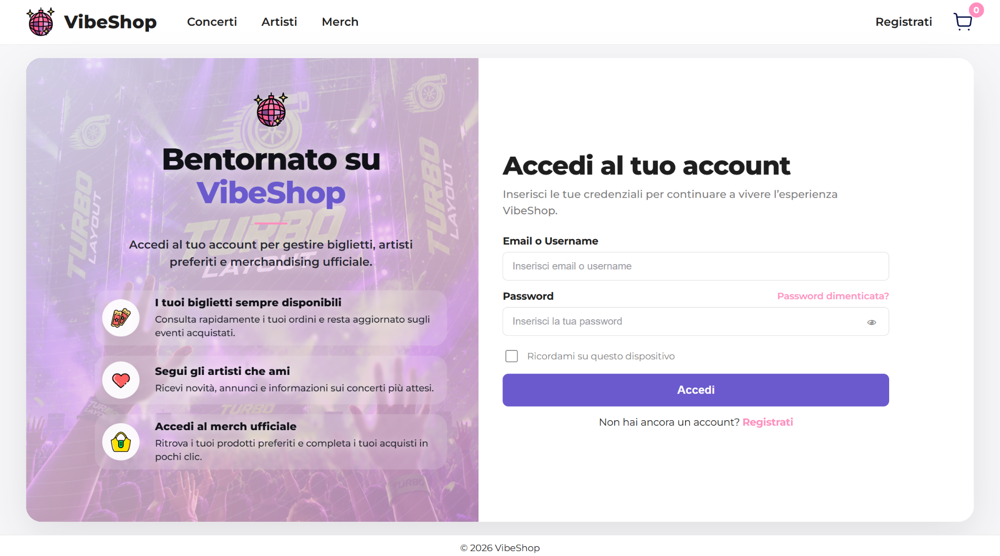
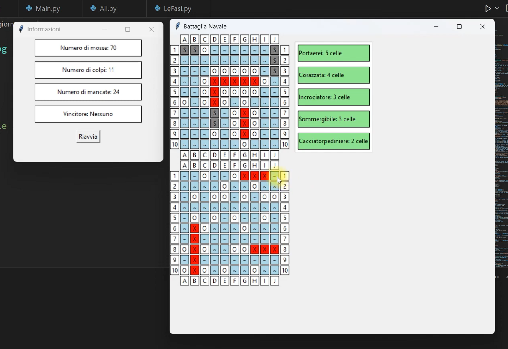
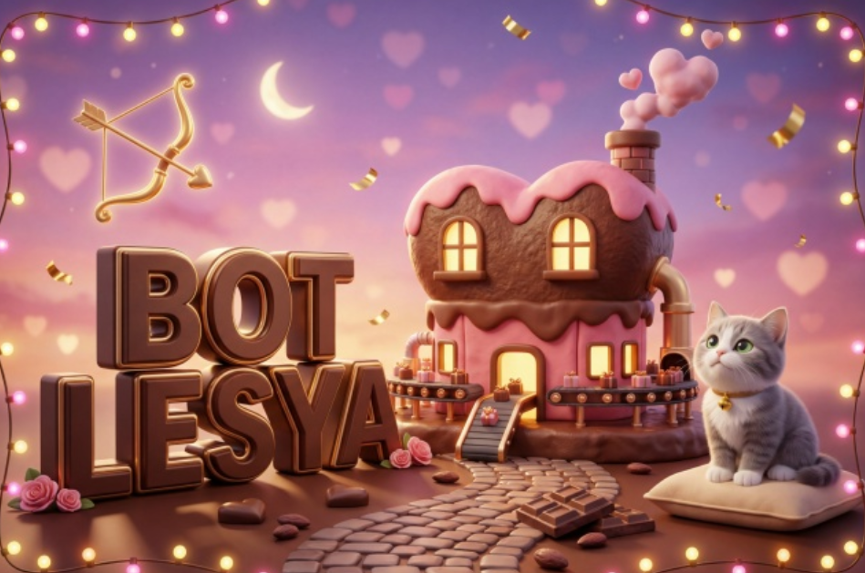
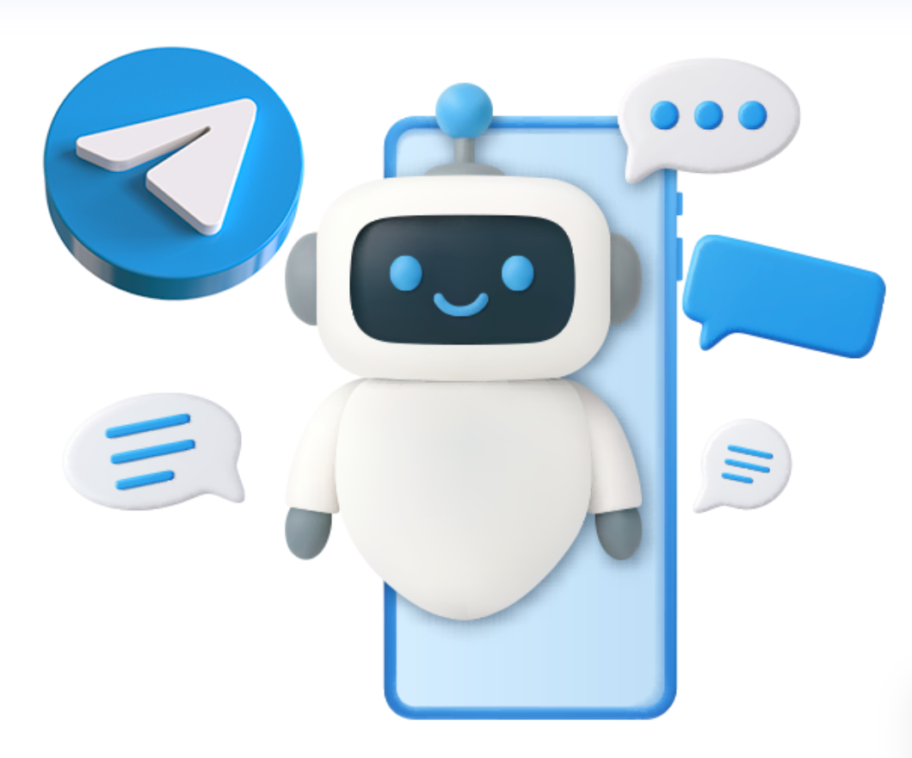
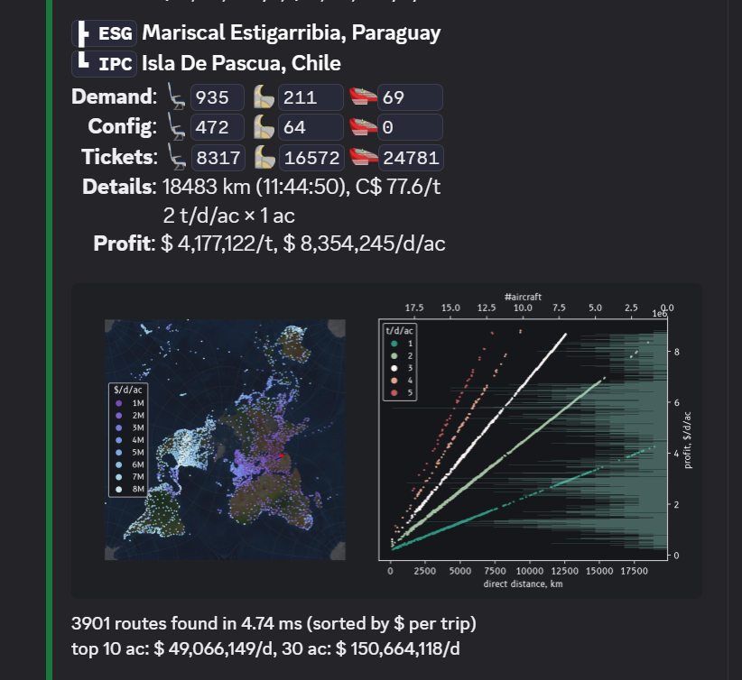

Moscow School №1955
Basic Computer Science and Python fundamentals.
I’m Denis Komarov, a Computer Science student and web developer focused on websites, landing pages, responsive layouts, bots, scripts, and small interactive projects. I combine practical development, structured thinking, and a long-term direction toward cybersecurity.
I build practical web and software projects with clear structure, stable layout, and a developer mindset.
I work with websites, landing pages, responsive layouts, UI structure, simple games, bots, scripts, and practical programming projects.
I build practical web and software projects: websites, landing pages, responsive interfaces, simple games, chatbots, automation scripts, and UI concepts. I prefer clean structure, readable code, and solutions that can be maintained after the first version is finished.
My academic path is focused on Computer Science, while my long-term direction is cybersecurity: AppSec, DevOps, DevSecOps, compliance, and potentially cloud security. I am building this path through programming fundamentals, web development, GitHub workflow, and secure-development thinking.
Aviation simulation shaped the way I approach technical work. Through online flying, ATC procedures, and realistic airliner operations, I practice planning, communication discipline, checklist thinking, and attention to detail — the same mindset I bring into software and web development.
Basic Computer Science and Python fundamentals.
Deeper work with Java, JavaScript, C, and practical programming logic.
Computer Science studies, development tools, and broader software foundations.
Additional educational courses from Google.
Long-term direction: AppSec, DevOps, Compliance, and possible Cloud Security.
A compact view of what I build across web development, bots, scripts, and small software projects.
Personal portfolios, landing pages, responsive layouts, and clean UI structure.
Simple automation scripts, Telegram/Discord bots, and game-like bot logic.
Simple games, interface concepts, and programming projects for practice and learning.
My stack is built around web development, programming fundamentals, automation, and a long-term move toward cybersecurity.
I work across web, programming, bots, and small software projects, with GitHub as my main code-sharing workflow.
My current direction connects Computer Science, web development, and cybersecurity-oriented engineering.
Real projects across web development, Python games, chatbots, automation, and information tools.

Concerts, artists, merch, registration/login pages, and user-facing views.

A Windows 2D Battleship game built in Python as a final exam project.

A game-style VK chat bot built around RPG-like mechanics, player actions, economy, bonuses, and timed events.

An informational Telegram bot that summarizes health-related content from public sources and provides concise reference-style answers. It is not a medical diagnostic tool.

A Discord bot for Airline Manager players that helps find the most profitable routes, so players can grow their airline faster and make better economic decisions.
Aviation is part of my technical mindset: procedures, checklists, communication, systems thinking, and realism-oriented improvement.
I am an IFATC Specialist and act as a development advisor, suggesting improvements that could bring the simulator closer to MSFS2020-level realism and real-world procedures.
In MSFS2020 I fly on VATSIM and IVAO, using realistic procedures, radio communication, planning tools, and flight tracking through Volanta.
I usually fly high-fidelity aircraft such as Fenix Airbus and PMDG Boeing add-ons, focusing on procedure, systems logic, and operational discipline.
Beyond programming and aviation, I write short stories and create drone footage, combining storytelling, atmosphere, and technical control.
I write short books, fairy-tale-style stories, and personal texts about my life in Italy. It helps me practice structure, tone, and clear storytelling.
I shoot aerial footage with a DJI Mavic Pro Platinum, combining technical control with visual composition and atmosphere.
Send a message with the goal, references, and expected result. I am open to web projects, bots, scripts, and cybersecurity-oriented learning collaborations.